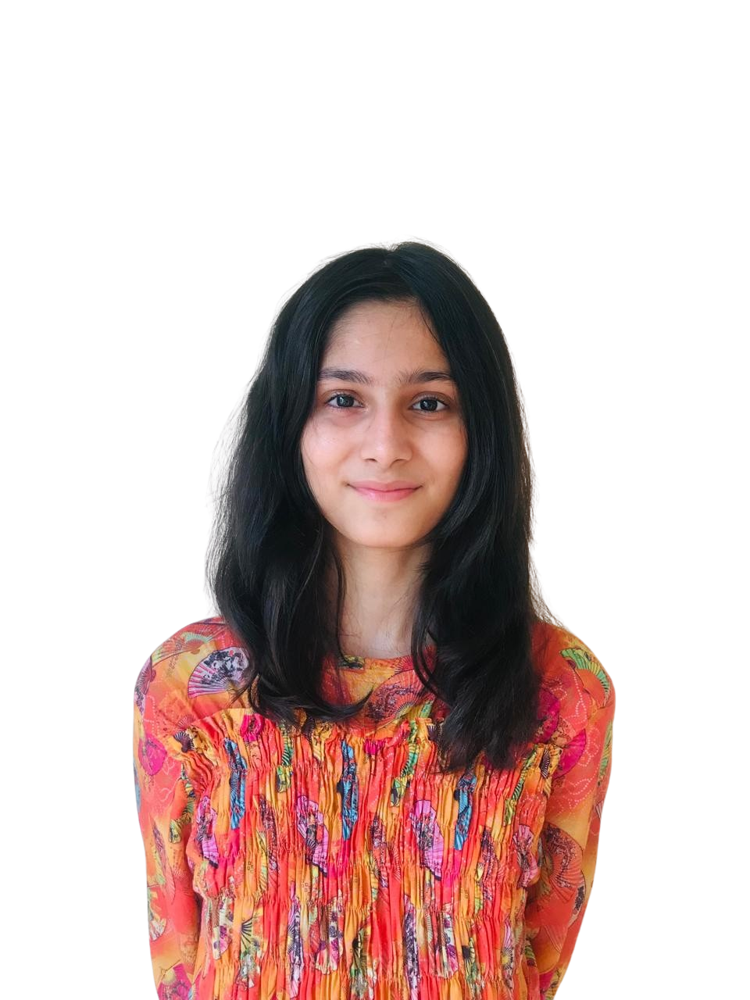
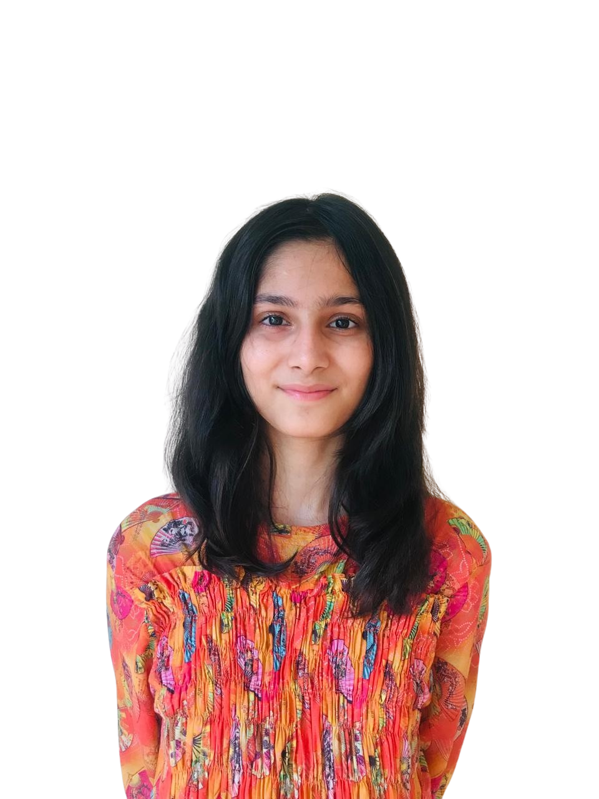
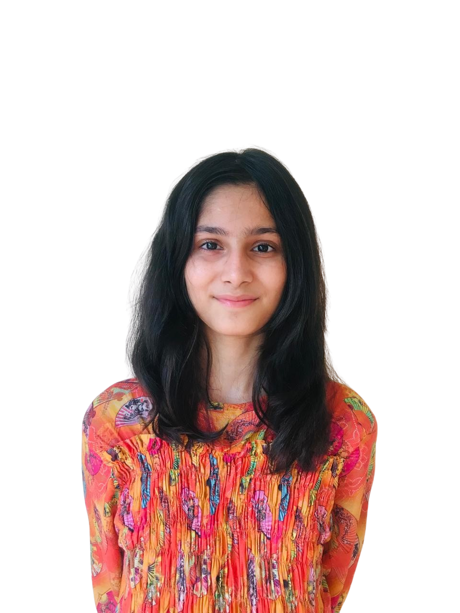

I’m Maryam from Pakistan, born and raised in Lahore, known as "The City of Gardens." I recently completed my exams for the third year of high school, where I studied a combination of Computer Science, Physics, and Math.
In addition to my studies, I participated in various beneficial extracurriculars that helped me grow and become more confident...
